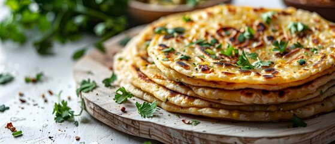

aalo paratha

Aloo parathas are mostly served as a breakfast dish along with dahi (plain yogurt),
or yogurt dips called raita. Sometimes, Athana (Indian pickle), chutney and masala chai are also served along with it.
In the 21st century, due to convenience, working routines, rising household incomes, smaller families and time restrictions,
the aloo paratha breakfast for urban Indians has been increasingly replaced by foods seen as more convenient such as cereals.
A similar pattern has been observed among Central Valley Sikhs in America.
Ingredients
For the Dough:
- 2 cups whole wheat flour
- water as needed
- 1-2 tbsp oil or ghee
- salt
For the filling
- 3-4 potatoes ,boiled and mashed
- 1-2green chilies
- 1tsp grated ginger
- 1tsp cubin seeds
- 1tsp red chili powder
- 1tsp gram masala
- 1tsp coriander powder
- 1tsp amchur
- 2-3 tbsp frest coriander leaves,chopped
- salt
For cooking:
Aloo Paratha Recipe:
- Dough: Mix 2 cups whole wheat flour with 1 tsp salt and enough water to form a soft dough; knead well.
- Filling: Combine 3-4 boiled mashed potatoes with chopped onions, green chilies, coriander, and spices (cumin,
garam masala, coriander powder, amchur, salt).
- Stuffing: Roll out a small dough ball, place a portion of the filling inside, and seal it; roll out again gently.
- Cooking: Cook on a hot griddle with ghee or oil until golden brown on both sides.